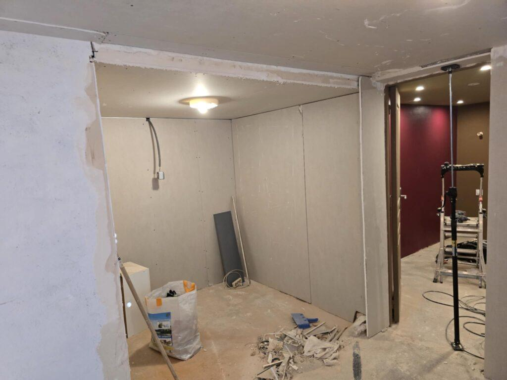
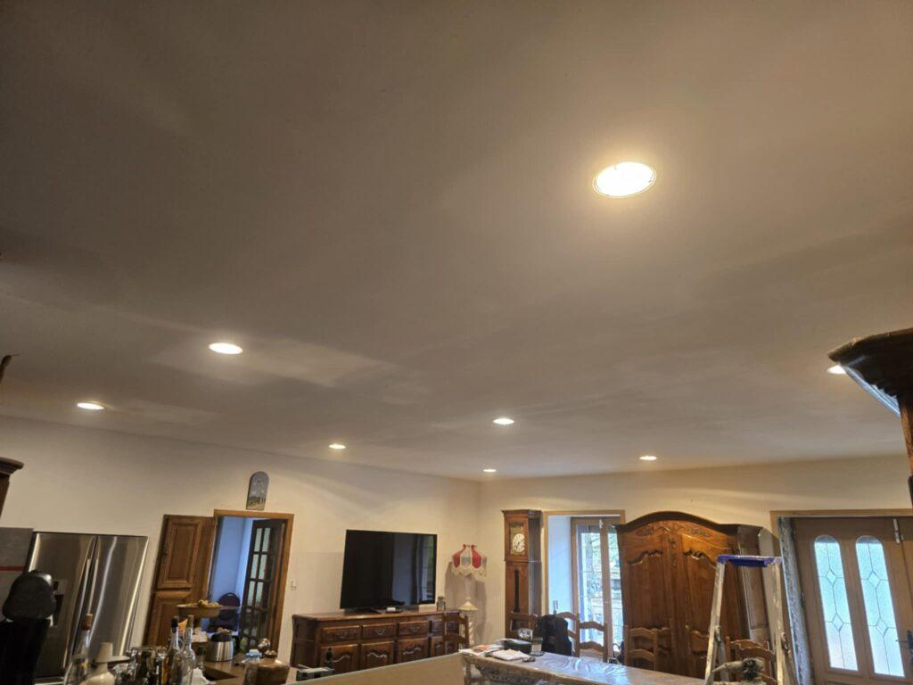
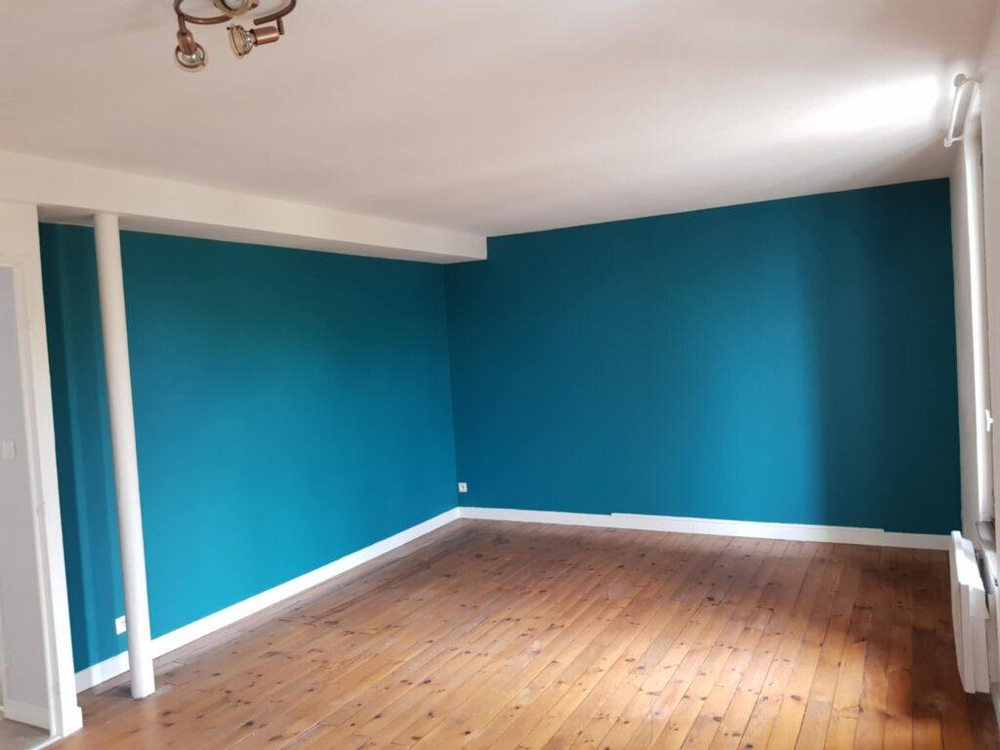
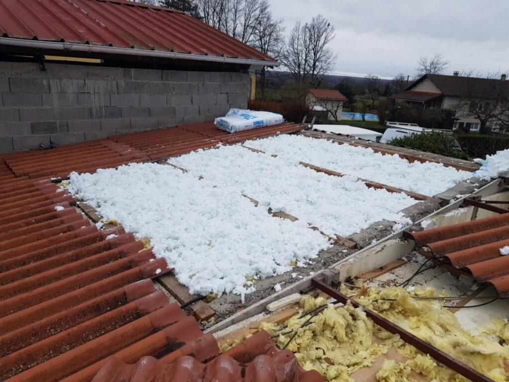
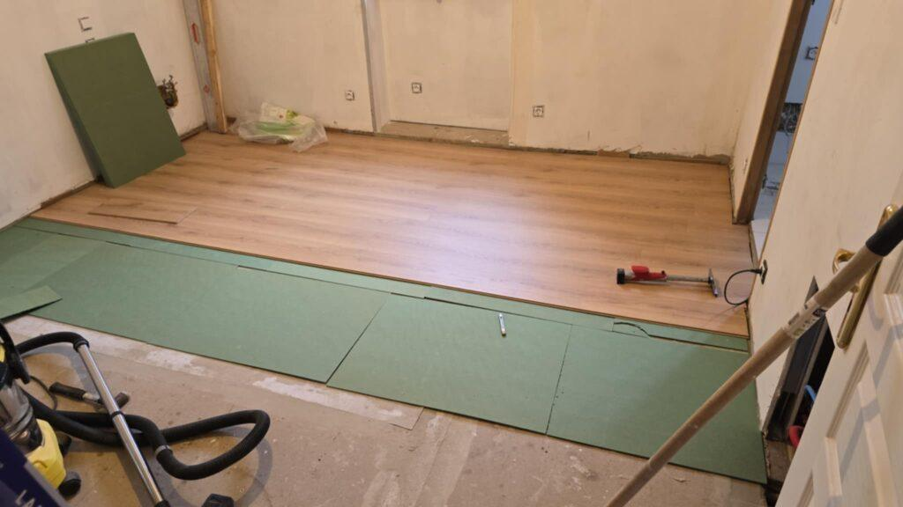
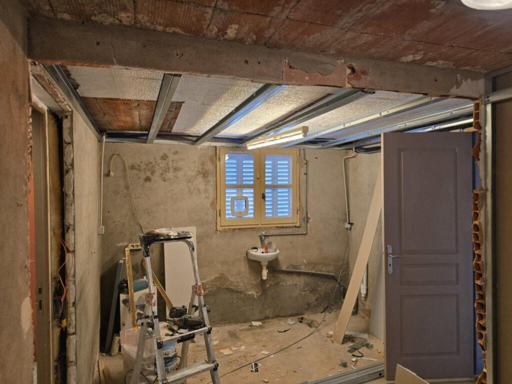

Nos services
De la cloison à la dernière couche de peinture, nous prenons en charge l'ensemble de vos travaux intérieurs, en neuf comme en rénovation.


Plâtrerie et plafonds
Cloisons et doublages en plaques de plâtre, faux plafonds avec éclairage intégré, plaques hydrofuges pour les pièces d'eau, plâtre traditionnel et décors pour le bâti ancien.
Voir la plâtrerie
Peinture
Murs, plafonds, boiseries et façades. Nous préparons les supports avec soin avant de peindre, et nous vous conseillons sur les teintes et les finitions.
Voir la peinture
Isolation
Combles perdus ou aménagés, murs par l'intérieur, planchers, avec des isolants adaptés à chaque logement et à son état.
Voir l'isolation
Sols et revêtements muraux
Parquet, stratifié, vinyle, carrelage et béton ciré au sol. Papier peint, toile de verre et enduits décoratifs aux murs.
Voir les sols et murs
Remise en état après sinistre
Dégât des eaux, infiltration, incendie : nous constatons les dégâts, chiffrons pour votre assureur et remettons en état plâtres, peintures et revêtements.
Voir la remise en étatNos prestations de A à Z
Le détail de ce que nous réalisons, dans tout le bassin de Vichy.
Plâtrerie et plafonds
- Cloison en plaques de plâtre
- Cloison sur ossature métallique
- Doublage de murs
- Doublage isolant
- Faux plafond suspendu
- Faux plafond avec spots
- Plafond acoustique
- Plafond courbe
- Plaques hydrofuges pour salle de bains
- Bandes et enduits de finition
- Plâtre traditionnel et chaux
- Moulures, corniches et rosaces
- Restauration de bâti ancien
Peinture
- Peinture de murs et plafonds
- Peinture de boiseries, portes et plinthes
- Peinture d'escalier
- Peinture de façade
- Ratissage et rebouchage de fissures
- Conseil couleurs
- Peinture après dégât des eaux
- Traitement anti-moisissure
- Peintures A+ et écologiques
- Lessivage avant peinture
Isolation
- Isolation des combles perdus
- Isolation par soufflage
- Isolation des combles aménagés
- Isolation sous rampants
- Isolation des murs par l'intérieur
- Isolation des planchers bas
- Isolation phonique
- Laine de roche, laine de verre, fibre de bois
- Retrait des anciens isolants
- Pare-vapeur et traitement des ponts thermiques
Sols et murs
- Pose de parquet massif et contrecollé
- Parquet flottant
- Sol stratifié
- Sol vinyle et PVC
- Carrelage de sol et mural
- Béton ciré
- Ragréage
- Pose de papier peint
- Papier peint panoramique
- Toile de verre
- Enduits décoratifs
- Plinthes et barres de seuil
Rénovation et sinistres
- Rénovation complète d'appartement
- Rénovation de maison
- Aménagement de combles
- Remise en état après dégât des eaux
- Devis pour assurance
- Rénovation pour location et DPE
- Travaux pour syndics de copropriété
- Travaux de locaux professionnels
Un projet de rénovation ? Parlons-en.
Nous venons voir les lieux gratuitement et vous remettons un devis détaillé sous 72 heures.